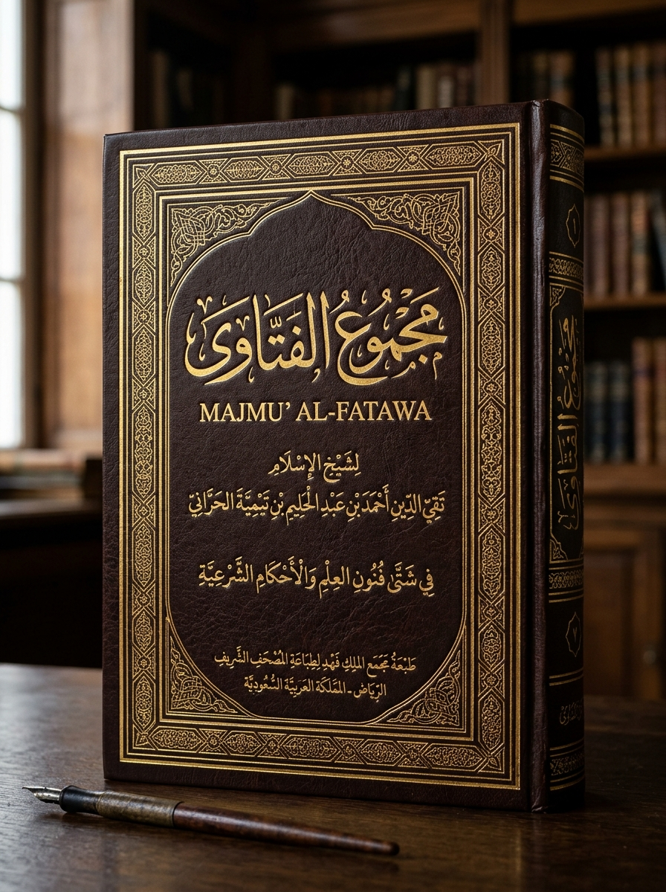

أَمَّا بَعْدُ: فَإِنَّ عِلْمَ الفِقْهِ وَالنَّوَازِلِ قَدْ ابْتُلِيَ فِي زَمَانِنَا هَذَا بِمَنْ جَعَلَ أَهْوَاءَ الجَلَسَاتِ شَرِيعَةً مَتْبُوعَةً، وَصَارَ يَسْتَنْبِطُ الأَحْكَامَ عَلَى قَدْرِ مَا يَهْوَاهُ خَاطِرُهُ أَوْ تَقْتَضِيهِ مَصْلَحَتُهُ فِي رُومَاتِ سِيرْفَرِ gc. وَلَمَّا كَانَ شَيْخُ gc أَحْمَد إِيهَاب قَدْ صَدَرَتْ عَنْهُ فَتَاوَى تَحَارُ فِيهَا العُقُولُ، وَتَنْكَرُهَا الأُصُولُ، رَأَى رِجَالُ الدَّوْلَةِ الفَارُوقِيَّةِ أَنْ يُدَوِّنُوهَا عَلَى سَمْتِ كُتُبِ المُتَقَدِّمِينَ تَبْوِيباً وَتَفْرِيعاً؛ لِيَقِفَ كُلُّ ذِي عَيْنَيْنِ فِي نَبْرُوه وَسَائِرِ البِلَادِ عَلَى مَنَابِتِ هَذِهِ الأَحْكَامِ.
وَقَدْ قَسَّمْنَا هَذَا المُجَلَّدَ عَلَى أَبْوَابٍ مُحْكَمَةٍ تَنْتَظِمُ فِيهَا فَتَاوَاهُ فِي الأَلْفَاظِ وَالسِّبَابِ، وَالأَعْدَادِ وَالمَعَازِفِ، وَالشَّبَكَاتِ الرَّقْمِيَّةِ، ثُمَّ مَا جَاءَ فِي التَّكْفِيرِ وَالحُدُودِ وَالحَصَانَةِ الذَّاتِيَّةِ، مُرْفَقَةً بِأَدِلَّتِهَا المَرْئِيَّةِ الصَّوْتِيَّةِ الَّتِي لَا تَقْبَلُ الشَّكَّ وَلَا التَّأْوِيلَ.
اعْلَمْ أَنَّ قَوَاعِدَ شَيْخِ gc أَحْمَد إِيهَاب بُنِيَتْ عَلَى أَصْلَيْنِ كَبِيرَيْنِ تَدُورُ حَوْلَهُمَا جَمِيعُ فَتَاوَاهُ وَشَطَحَاتِهِ فِي رُومَاتِ نَبْرُوه وَالدَّوْلَةِ الفَارُوقِيَّةِ:
الأَصْلُ الأَوَّلُ: اعْتِبَارُ سُلْطَةِ المَجْلِسِ حَاكِمَةً عَلَى الأُصُولِ؛ فَمَا رَآهُ هُوَ مَصْلَحَةً لِنَفْسِهِ أَوْ لِمَجْمُوعَتِهِ فِي لَحْظَةِ النِّزَاعِ جَعَلَهُ دِيناً مُلْزِماً، وَمَا رَآهُ مُخَالِفاً لِمُرَادِهِ أَلْحَقَ بِهِ صِفَةَ التَّحْرِيمِ أَوْ التَّكْفِيرِ دُونَ تَوَقُّفٍ عَلَى نَصٍّ أَوْ إِجْمَاعٍ مَعْلُومٍ.
الأَصْلُ الثَّانِي: قِيَاسُ الغَائِبِ عَلَى الشَّاهِدِ بِأَضْعَفِ الأَوْصَافِ؛ كَقِيَاسِهِ الصَّمْتَ عَلَى التَّكَبُّرِ، وَقِيَاسِهِ رِقَّةَ الصَّوْتِ عَلَى الخُرُوجِ عَنِ الرُّجُولَةِ، وَقِيَاسِهِ لَفْظَ "اتْبَضَنْتُ" عَلَى كُفْرِ النِّعَمِ لِاشْتِقَاقِهِ اللُّغَوِيِّ المَزْعُومِ مِنْ بَيْضِ الطَّعَامِ!
وَلَمَّا كَانَ كَثِيرٌ مِنْ رُوَّادِ سِيرْفَرِ gc يَسْمَعُونَ هَذِهِ المَقَالَاتِ فَيَظُنُّونَهَا عَفْوَ خَاطِرٍ، كَانَ مِنْ وَاجِبِ النُّصْحِ تَسْجِيلُهَا وَتَوْثِيقُ كُلِّ فَتْوَى بِزَمَانِهَا وَتَسْجِيلِهَا المَرْئِيِّ، حَتَّى يَكُونَ هَذَا المُصَنَّفُ شَاهِداً عَدْلاً يُقْضَى بِهِ فِي مَجَالِسِ القَضَاءِ الإِلِكْتُرُونِيِّ.
وَهَا نَحْنُ نَشْرَعُ فِي سَرْدِ المَسَائِلِ بَاباً بَاباً، عَلَى مَا جَرَى بِهِ لِسَانُهُ وَثَبَتَ فِي شَرَائِطِ التَّسْجِيلِ، وَاللهُ المُسْتَعَانُ وَعَلَيْهِ التُّكْلَانُ.
الأَصْلُ فِي الأَحْكَامِ عِنْدَنَا أَنْ تَدُورَ مَعَ مَصْلَحَةِ المَجْلِسِ وَمَا يَسْتَقِرُّ عَلَيْهِ أَمْرُ الرُّومَاتِ؛ فَمِنْ ذَلِكَ: أَنَّهُ لَا يَجُوزُ لِمَنْ كَانَ فِي حَلْقَةِ الحِوَارِ أَنْ يُسْقِطَ مَرَاتِبَ الأَقْدَمِيَّةِ، وَقَدْ قَرَّرْنَا فِي ذَلِكَ أَنَّ «حَرَامٌ أَنْ تُنَادِيَ مَنْ هُوَ أَكْبَرُ مِنْكَ بِاسْمِهِ المُجَرَّدِ»(١)، وَذَلِكَ لِأَنَّ إِسْقَاطَ اللَّقَبِ كَبِيرَةٌ تُورِثُ الجَرَاءَةَ، وَتُسْقِطُ هَيْبَةَ السِّيرْفَرِ، وَتَفْتَحُ بَابَ السَّفَاهَةِ بَيْنَ الأَقْرَانِ، فَلَا بُدَّ مِنْ تَقْدِيمِ «حَضْرَتِكَ» أَوْ «يَا كَبِيرُ».
وَأَمَّا مَا يَلْهَجُ بِهِ العَوَامُّ فِي خِطَابِهِمْ مِنْ قَوْلِهِمْ: «يَا بَاشَا»، فَقَدْ وَرَدَ عَنَّا تَغْلِيظُ النَّكِيرِ فِيهِ؛ إِذْ قُلْنَا مَنْصُوصاً: «مَنْ يَقُلْ كَلِمَةَ "بَاشَا" يَأْخُذْ ذُنُوباً وَآثَاماً»(٢)؛ لِأَنَّ لَفْظَ البَاشَاوِيَّةِ فِيهِ شُبْهَةُ نَفْخِ الأَنَا وَالتَّعْظِيمِ الدَّخِيلِ الَّذِي يُورِثُ التَّمَلُّقَ المَذْمُومَ، فَرَأَيْنَا أَنَّ قَائِلَهَا يَكْسِبُ سَيِّئَةً فِي كُلِّ مَرَّةٍ يَنْطِقُ بِهَا فِي المَجَالِسِ.
وَكَذَلِكَ جَاءَ فِي فِقْهِ التَّأَوُّهِ وَالتَّعْبِيرِ عَنِ المَشَاقِّ: «حَرَامٌ عَلَى الرَّجُلِ أَنْ يَقُولَ "آه"؛ لِأَنَّ فِيهَا تَشَبُّهاً بِالنِّسَاءِ فِي الرِّقَّةِ وَالخُضُوعِ بِالقَوْلِ»؛ وَعِلَّتُهُ أَنَّ الرُّجُولَةَ فِي فِقْهِ السِّيرْفَرَاتِ تَسْتَوْجِبُ الخُشُونَةَ التَّامَّةَ، وَأَنَّ التَّأَوُّهَ بِالمَدِّ يَنْقُضُ هَيْبَةَ المُتَكَلِّمِ وَيُلْحِقُهُ بِمَنْ نُهِيَ عَنِ التَّشَبُّهِ بِهِنَّ.
وَسُئِلَ رَحِمَهُ اللهُ عَنِ السِّبَابِ وَالشَّتَائِمِ المُغَلَّظَةِ، هَلْ تَسُوغُ لِلْمَرْءِ عِنْدَ المُشَاحَّةِ فِي الرُّومَاتِ؟ فَأَجَابَ: «يَجُوزُ السِّبَابُ وَالشَّتِيمَةُ إِذَا كَانَتْ لِأَخْذِ الحَقِّ وَدَفْعِ المَظَالِمِ»(٣). وَتَخْرِيجُهَا أَنَّ انْتِزَاعَ الحُقُوقِ قَدْ يَعْسُرُ بِاللِّسَانِ اللَّيِّنِ، فَإِذَا اسْتَعْصَى الغَرِيمُ جَازَ إِطْلَاقُ العَنَانِ لِلْفَحْشَاءِ رَدْعاً لَهُ!
وَمِنْ نَوَادِرِهِ قَوْلُهُ فِي فَاقِدِ النُّطْقِ: «الأَخْرَسُ حَرَامٌ أَنْ نُكَلِّمَهُ؛ لِأَنَّهُ مُتَكَبِّرٌ لَا يَرُدُّ الجَوَابَ!»(٤). فَحَمَلَ خَرَسَهُ عَلَى مَحْمَلِ التَّرَفُّعِ عَنِ الإِجَابَةِ، وَأَوْجَبَ مُعَامَلَتَهُ بِالمُقَاطَعَةِ الجَمَاعِيَّةِ زَجْراً لَهُ عَنْ هَذَا الكِبْرِ المُتَوَهَّمِ.
وَشَدَّدَ الشَّيْخُ النَّكِيرَ عَلَى مَنْ يَقُولُ فِي مَجَالِسِ الرُّومَاتِ لَفْظَةَ: «اتْبَضَنْتُ»، وَقَضَى فِيهَا بِقَضَاءٍ مُبْتَكَرٍ فَقَالَ: «مَنْ يَقُلْ كَلِمَةَ "اتْبَضَنْتُ" فَهُوَ حَرَامٌ آثِمٌ؛ لِأَنَّهُ يَسْتَهْزِئُ بِنِعْمَةِ اللهِ الَّتِي هِيَ (البَيْضُ)!». وَتَأْوِيلُهُ العَجِيبُ فِي ذَلِكَ: أَنَّ اشْتِقَاقَ هَذِهِ الكَلِمَةِ فِي العُرْفِ رَاجِعٌ عِنْدَهُ إِلَى طَعَامِ البَيْضِ الَّذِي امْتَنَّ اللهُ بِهِ عَلَى عِبَادِهِ غِذَاءً وَقُوتاً، فَإِذَا اسْتَعْمَلَ المَرْءُ هَذَا اللَّفْظَ فِي مَقَامِ الضَّجَرِ وَالمَلَلِ وَالتَّبَرُّمِ، كَانَ ذَلِكَ عِنْدَهُ جُحُوداً لِلنِّعْمَةِ وَاسْتِخْفَافاً بِالمَطْعُومِ الَّذِي يُوجِبُ الشُّكْرَ لَا التَّسَخُّطَ!
قَضَى الشَّيْخُ بِأَنَّ «الأَرْقَامَ الفَرْدِيَّةَ كُلَّهَا حَرَامٌ، وَلَا حِلَّ إِلَّا فِي الأَشْفَاعِ الزَّوْجِيَّةِ»؛ فَأَوْجَبَ فِي كُلِّ مُعَامَلَةٍ لُزُومَ الزَّوْجِيِّ كَاثْنَيْنِ وَأَرْبَعَةٍ. وَكَذَلِكَ جَاءَ عَنْهُ: «تَحْرِيمُ لُبْسِ اللَّوْنِ الأَحْمَرِ بَعْدَ صَلَاةِ المَغْرِبِ»(٥)؛ لِمَا فِيهِ عِنْدَهُ مِنْ مُوَاطَأَةِ حُمْرَةِ الشَّفَقِ الغَارِبِ وَاسْتِجْلَابِ الشَّيَاطِينِ إِلَى رُومَاتِ اللَّيْلِ.
وَسُئِلَ رَحِمَهُ اللهُ عَنِ الغِنَاءِ وَأَهْلِهِ فِي زَمَانِنَا، فَأَطْلَقَ حُكْماً مُغَلَّظاً لَمْ يُسْبَقْ إِلَيْهِ، إِذْ قَرَّرَ أَنَّ: «كُلَّ الأَغَانِي حَرَامٌ قَطْعاً، وَجَمِيعَ المُغَنِّينَ كُفَّارٌ خَارِجُونَ عَنِ المِلَّةِ، مَا عَدَا أَغَانِي "اسْكِيبِيدِي تُوَالِيتْ" (Skibidi Toilet)، وَأَنَاشِيدَ "حَمُو الطِّيخَا"، وَأَهَازِيجَ "اسْتِيل إِيه بُرَيْن رُوتْ" (Steal a Brainrot)!».
وَتَخْرِيجُ هَذَا الاسْتِثْنَاءِ الفَرِيدِ عِنْدَهُ: أَنَّ عَامَّةَ الأَغَانِي تُورِثُ فِتْنَةَ القُلُوبِ وَالعِشْقِ، فَاسْتَوْجَبَ أَهْلُهَا التَّكْفِيرَ عِنْدَهُ؛ أَمَّا أَهَازِيجُ "الاسْكِيبِيدِي" وَشِيلَاتُ "البُرَيْن رُوت" وَمَهْرَجَانَاتُ "حَمُو الطِّيخَا"، فَلَيْسَ فِيهَا مَعْنًى يُخْشَى مِنْهُ الفِتْنَةُ، بَلْ هِيَ أَصْوَاتٌ تَمْحُو العَقْلَ مَحْواً فَلَا يَبْقَى لِلْهَوَى مَوْضِعٌ! فَأَلْحَقَهَا بِالمُبَاحَاتِ بَلْ بِالمُسْتَحَبَّاتِ فِي مَجَالِسِ الرُّومَاتِ كَمَا زَعَمَ!
وَابْتَدَعَ الشَّيْخُ فِي فِقْهِ المَنَصَّاتِ الرَّقْمِيَّةِ حُكْماً جُغْرَافِيّاً غَرِيباً؛ إِذْ نَصَّ عَلَى أَنَّهُ: «حَرَامٌ أَنْ تَضَعَ صُورَةً عَارِيَةً أَوْ غَيْرَ لَائِقَةٍ لَيْسَتْ صُورَتَكَ فِي مَجْمُوعَاتِ الدِّيسْكُورْدِ، أَمَّا فِي التِّيكْ تُوكْ فَعَادِيٌّ لَا حَرَجَ فِيهِ»(٦). فَجَعَلَ الذَّنْبَ مُقَيَّداً بِاسْمِ المَوْقِعِ؛ فَالدِّيسْكُورْدُ عِنْدَهُ حَرَمٌ مَصُونٌ، أَمَّا التِّيكْ تُوكْ فَلَمَّا كَانَ سَاحَةً مَفْتُوحَةً لِعَامَّةِ الخَلْقِ سَقَطَ عَنْهُ الحَرَجُ عِنْدَهُ!
وَمِنْ أَبْرَزِ قَوَاعِدِهِ الَّتِي سَارَتْ بِهَا الرُّكْبَانُ فِي تَبْرِيرِ الشَّهَوَاتِ: أَنَّ «مُشَاهَدَةَ الأَفْلَامِ المُحَرَّمَةِ حَلَالٌ جَائِزَةٌ إِذَا كَانَتْ مَكْتُومَةَ الصَّوْتِ». وَتَأْوِيلُهُ البَاطِلُ فِي ذَلِكَ: أَنَّ التَّحْرِيمَ إِنَّمَا نَزَلَ فِي الأَصْوَاتِ وَالنَّغَمَاتِ وَالتَّأَوُّهَاتِ؛ فَإِذَا مَا جَرَّدَ المَرْءُ المَقْطَعَ مِنْ صَوْتِهِ صَارَتِ الصُّورَةُ جِرْماً صَامِتاً لَا يُثِيرُ فِتْنَةً سَمْعِيَّةً، فَيَحِلُّ النَّظَرُ إِلَيْهِ حَسَبَ زَعْمِهِ المُتَهَافِتِ!
وَهَذَا القَوْلُ مِنْ أَظْهَرِ مَا يُبَيِّنُ جَهْلَهُ بِقَوَاعِدِ الشَّرِيعَةِ الَّتِي جَاءَتْ بِغَضِّ البَصَرِ أَوَّلاً، وَحِفْظِ الفَرْجِ ثَانِياً، فَلَمْ يُفَرِّقْ بَيْنَ سَمْعٍ وَبَصَرٍ فِي المَحْظُورَاتِ.
أَفْتَى الشَّيْخُ بِأَنَّ «اللَّعِبَ مَعَ البَنَاتِ حَلَالٌ مُطْلَقاً، إِلَّا الزَّانِي وَالزَّانِيَةَ»(٧)؛ ثُمَّ تَجَرَّأَ فِي نَازِلَةٍ أُخْرَى فَقَالَ: «ارْتِكَابُ الفَاحِشَةِ حَلَالٌ إِذَا كَانَ بِنِيَّةِ التَّعَلُّمِ وَاكْتِسَابِ الخِبْرَةِ بَعْدَ بُلُوغِ الثَّامِنَةَ عَشْرَةَ عَاماً»(٨)؛ فَجَعَلَ بُلُوغَ السِّنِّ القَانُونِيَّةِ مَسْقَطاً لِلْحُدُودِ وَالحُرُمَاتِ بِدَعْوَى "التَّعَلُّمِ"!
وَسُئِلَ الشَّيْخُ عَنْ أَقْوَالِ وَمَقَالَاتِ الدُّكْتُورِ الأُسْتَاذِ ضِيَاءِ العِوَضِيِّ فِي الرُّومَاتِ وَالمَجَالِسِ، فَقَالَ: «كُلُّ كَلَامِ الدُّكْتُورِ الأُسْتَاذِ ضِيَاءِ العِوَضِيِّ حَلَالٌ مَقْبُولٌ لَا غُبَارَ عَلَيْهِ، مَا عَدَا قَوْلَهُ: (كُلُّ مَنِ اسْمُهُمْ كَرِيمٌ لَيْسُوا رِجَالاً، وَمِيشُو سَعِيد لَيْسَ مِنَ الرِّجَالِ)؛ فَهَذَا القَوْلُ مِنْهُ مَرْدُودٌ!».
وَتَأْوِيلُ الشَّيْخِ فِي ذَلِكَ: أَنَّ الدُّكْتُورَ ضِيَاءً عِنْدَهُ مِنَ الكِبَارِ الَّذِينَ لَا يُرَدُّ لَهُمْ كَلَامٌ فِي الأُصُولِ، وَلَكِنَّهُ حِينَ خَاضَ فِي الطَّعْنِ فِي رُجُولَةِ مَنْ تَسَمَّى بِـ (كَرِيم) عَلَى العُمُومِ، أَوْ أَلْحَقَ بِذَلِكَ (مِيشُو سَعِيد) خَرَجَ عَنْ مَقَامِ العَدْلِ، فَأَسْقَطَ الشَّيْخُ هَذَا القَوْلَ وَحْدَهُ وَأَبْقَى عَلَى حِلِّ سَائِرِ مَقَالَاتِهِ وَأَحْكَامِهِ مَرْفُوعَةَ الرَّأْسِ!
وَبَلَغَ الغُلُوُّ بِشَيْخِ gc ذِرْوَتَهُ حِينَ قَعَّدَ لِبَابِ الرِّدَّةِ فَقَالَ: «مَنْ يَغْلَطْ فِي أَحْمَدَ إِيهَاب أَوْ يَرُدَّ عَلَيْهِ أَوْ يُخَطِّئْهُ فَهُوَ كَافِرٌ خَارِجٌ عَنِ المِلَّةِ!». فَجَعَلَ ذَاتَهُ مِعْيَاراً لِلإِيمَانِ وَالكُفْرِ، فَمَنْ وَافَقَهُ وَسَلَّمَ لَهُ فَهُوَ المُؤْمِنُ الحَقُّ، وَمَنْ أَنْكَرَ عَلَيْهِ هَفْوَةً أَوْ خَطَّأَهُ فِي مَجْلِسٍ فَقَدْ حَلَّتْ عَلَيْهِ رِبْقَةُ الكُفْرِ عِنْدَهُ!
وَمِنْ شَوَاذِّهِ: «اسْتِبَاحَةُ مَحْمُودٍ وَالنَّيْلُ مِنْهُ حَلَالٌ دُونَ سَائِرِ الخَلْقِ»؛ إِذْ جَعَلَ خُصُومَتَهُ لِمَحْمُودٍ ذَرِيعَةً لِإِسْقَاطِ حُرْمَتِهِ كُلِّيَّةً. وَكَذَلِكَ قَوْلُهُ: «أَكْثَرُ النَّاسِ حِفْظاً لِلْقُرْآنِ فِي الرُّومِ يَلْزَمُهُ أَنْ يُغَسِّلَ الكَافِرَ الدَّاخِلَ فِي الإِسْلَامِ بِيَدِهِ اليُمْنَى أَوَّلاً»، فِي إِقْحَامٍ غَرِيبٍ لِلْحِفْظِ فِي شُؤُونِ الغُسْلِ الجَسَدِيِّ.
وَخَتَمَ مَذْهَبَهُ بِالقَاعِدَةِ الكُبْرَى: «الشَّيْخُ يَمْلِكُ سُلْطَةً مُطْلَقَةً فِي مُسَامَحَةِ نَفْسِهِ وَإِسْقَاطِ تَبِعَاتِ خَطَايَاهُ ذَاتِيّاً»(٩)؛ فَإِذَا مَا أُدِينَ بِتَنَاقُضٍ أَوْ ظُلْمٍ، خَلَا بِنَفْسِهِ لَحْظَةً وَأَبْرَأَ ذِمَّتَهُ تِلْقَائِيّاً دُونَ رَدِّ حَقٍّ أَوْ اعْتِذَارٍ لِمَظْلُومٍ!
تَوْثِيقاً لِهَذِهِ النَّوَازِلِ وَحِفْظاً لِلْأَسَانِيدِ الَّتِي جَرَتْ عَلَى أَلْسِنَةِ أَهْلِ الرُّومَاتِ، نَسْرُدُ هُنَا قَائِمَةَ التَّسْجِيلَاتِ الحَيَّةِ المُعْتَمَدَةِ لَدَى هَيْئَةِ التَّحْقِيقِ كَأَدِلَّةِ إِدَانَةٍ قَاطِعَةٍ (اضغط على أي تسجيل للمشاهدة فوراً):
| المَوْضُـــــــــــــــــــــــــــــــــــــــــــــــــــــــــوعُ | الصَّفْحَةُ |
|---|---|
| • دِيبَاجَةُ الكِتَابِ وَخُطْبَةُ الاِفْتِتَاحِ المَطْبَعِيِّ | ٣ |
| • مُقَدِّمَةُ التَّحْقِيقِ: مَنْهَجُ الشَّيْخِ وَقَوَاعِدُهُ فِي الِاسْتِنْبَاطِ | ٤ |
| • ١. حُرْمَةُ نِدَاءِ الأَكْبَرِ سِنّاً بِاسْمِهِ المُجَرَّدِ فِي الرُّومَاتِ | ٥ |
| • ٢. كَرَاهِيَةُ لَفْظِ "بَاشَا" وَمَا يَلْحَقُ قَائِلَهَا مِنَ الآثَامِ | ٥ |
| • ٣. تَحْرِيمُ قَوْلِ "آه" لِلرَّجُلِ لِعِلَّةِ التَّشَبُّهِ بِالنِّسَاءِ | ٥ |
| • ٤. جَوَازُ الشَّتِيمَةِ وَالسِّبَابِ لِأَخْذِ الحَقِّ وَدَفْعِ الصَّائِلِ | ٦ |
| • ٥. مُقَاطَعَةُ الأَبْكَمِ (الأَخْرَسِ) لِظَنِّ التَّكَبُّرِ فِيهِ | ٦ |
| • ٦. تَحْرِيمُ لَفْظِ «اتْبَضَنْتُ» لِعِلَّةِ جُحُودِ نِعْمَةِ البَيْضِ | ٦ |
| • ٧. تَحْرِيمُ الأَرْقَامِ الفَرْدِيَّةِ وَوُجُوبُ الأَشْفَاعِ الزَّوْجِيَّةِ | ٧ |
| • ٨. حَظْرُ ارْتِدَاءِ اللَّوْنِ الأَحْمَرِ عَقِبَ صَلَاةِ المَغْرِبِ | ٧ |
| • ٩. تَكْفِيرُ المُغَنِّينَ وَاسْتِثْنَاءُ الاسْكِيبِيدِي وَحَمُو الطِّيخَا وَالبُرَيْن رُوت | ٧ |
| • ١٠. التَّفْرِيقُ بَيْنَ الصُّوَرِ فِي الدِّيسْكُورْدِ وَالتِّيكْ تُوكْ | ٨ |
| • ١١. اسْتِحْلَالُ النَّظَرِ إِلَى المَحْظُورَاتِ مَكْتُومَةَ الصَّوْتِ (Mute) | ٨ |
| • ١٢. جَوَازُ اللَّعِبِ مَعَ الفَتَيَاتِ وَاسْتِثْنَاءُ أَهْلِ الفَوَاحِشِ | ٩ |
| • ١٣. دَعْوَى اسْتِبَاحَةِ الفَاحِشَةِ بِنِيَّةِ التَّعَلُّمِ بَعْدَ الـ ١٨ | ٩ |
| • ١٤. حِلِّيَّةُ كَلَامِ د. ضِيَاء العِوَضِيِّ وَاسْتِثْنَاءُ كَرِيم وَمِيشُو سَعِيد | ٩ |
| • ١٥. كُفْرُ مَنْ غَلِطَ فِي أَحْمَدَ إِيهَاب أَوْ خَطَّأَهُ فِي مَجْلِسٍ | ١٠ |
| • ١٦. خُصُوصِيَّةُ اسْتِبَاحَةِ مَحْمُودٍ وَالنَّيْلِ مِنْهُ دُونَ سَائِرِ النَّاسِ | ١٠ |
| • ١٧. إِيجَابُ تَغْسِيلِ الدَّاخِلِ فِي المِلَّةِ عَلَى أَتْقَنِ الحَفَظَةِ بِيَمِينِهِ | ١٠ |
| • ١٨. صَلَاحِيَّةُ الشَّيْخِ المُطْلَقَةُ فِي مُسَامَحَةِ نَفْسِهِ ذَاتِيّاً | ١٠ |
| • مَلْحَقُ الأَسَانِيدِ وَالتَّسْجِيلَاتِ المَرْئِيَّةِ المُعْتَمَدَةِ (٩ تَسْجِيلَاتٍ) | ١١ |